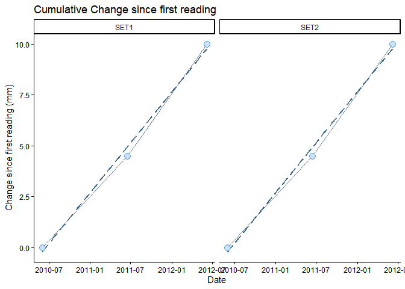
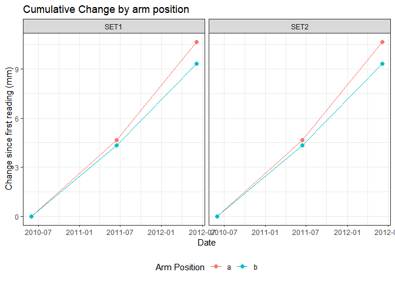

The goal of SETr is to simplify calculations and make graphs for QA/QC and communication of Surface Elevation Table (SET) data.
This package is based on functions created as part of a larger workflow. All code for that project is also on GitHub, here; and at the top of the README for that repo are links to publicly available project outputs. Most of the functions here were used in the Reserve-level technical reports. Please see the package vignette for details on using this package.
Installation
You can install the development version from GitHub with:
# install.packages("remotes")
remotes::install_github("nerrscdmo/SETr")Example
This is a basic example which shows you how to make a simple graph of change since the first reading at each SET:
library(SETr)
# first, perform cumulative change calculations
cumu_set <- calc_change_cumu(example_sets)
# now plot cumulative change by SET
plot_cumu_set(cumu_set$set)
# or by arm, at a single SET
plot_cumu_arm(cumu_set$arm)